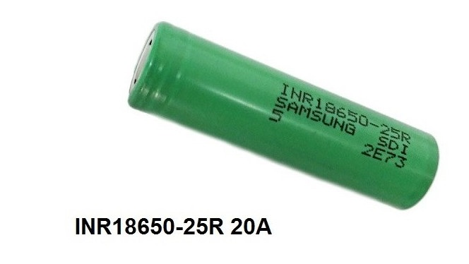
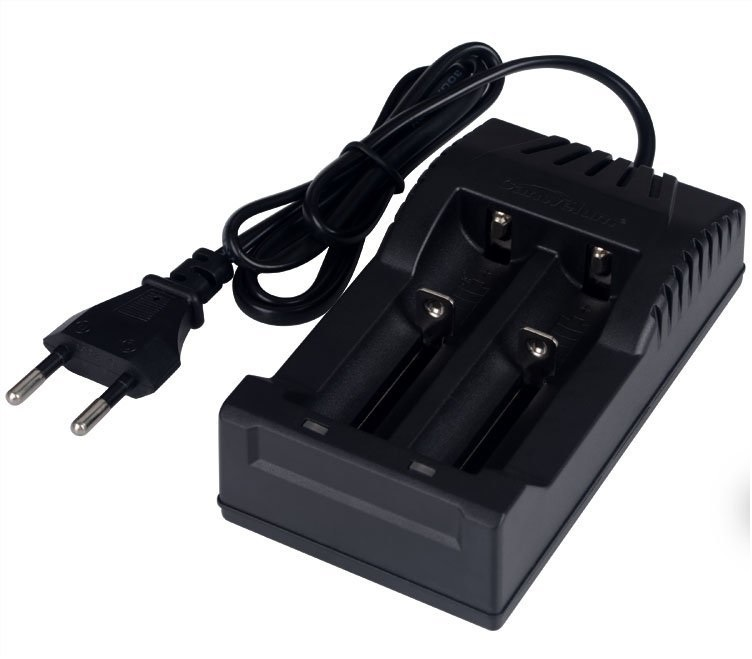
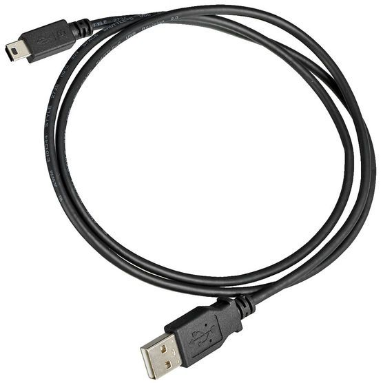

Baterias y Cargadores

Baterías
La gran mayoría de los dispositivos usan las mismas baterías. Algunos utilizan una, otras hasta tres. Esto depende en gran medida de que tipo de vapeador utilizemos. Por ejemplo los E-cigarrillos o Vape Pens, tienen la rosca denominada EGO la cual es parte del dispositivo.
Baterías EGO

Estas baterías en particular ya vienen cun su propio diseño incluido sin regulador de voltaje.
Baterías para dispositivos APVs o Mods(18650)
A diferencia de las otras baterías, estas separables de su diposistivo. Se pueden recargar via USB o con un cargador de voltage.
Cargadores
Cargador universal de baterías.

Cargador USB. Éste es el método mas común ya que es el mismo que tenemos en los celulares hoy en dia, y la gran mayoria de vapeadores vienen con la entrada hembra para enchufarlos.